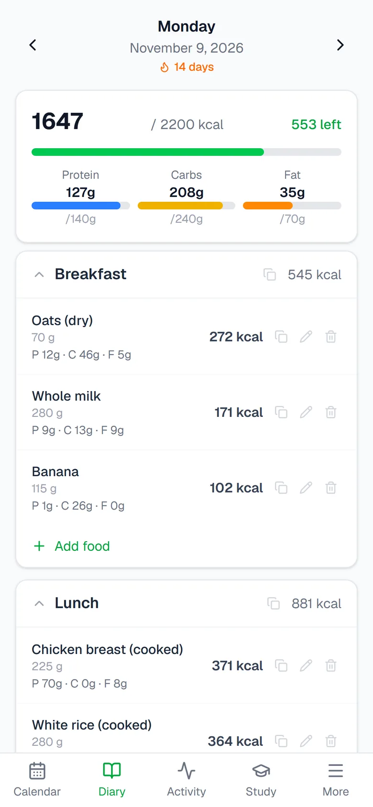
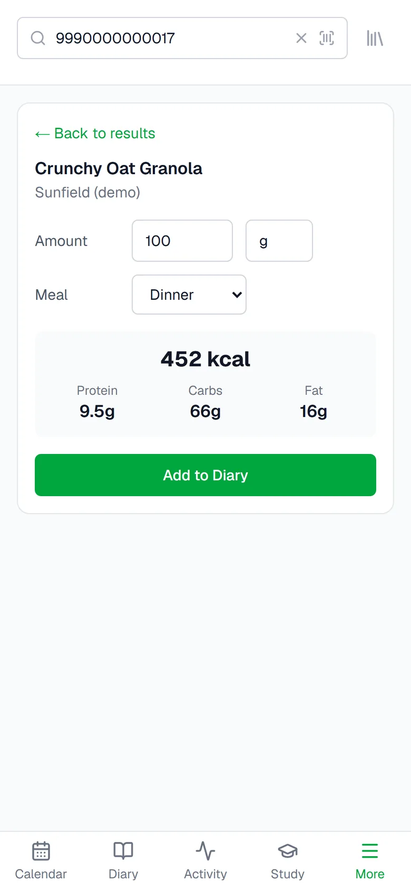
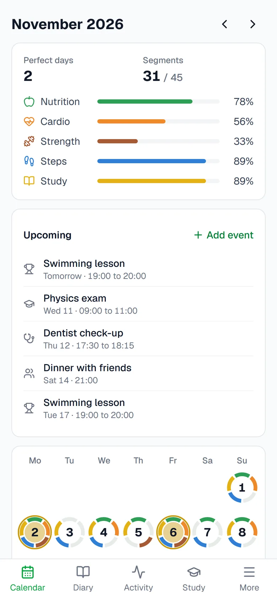
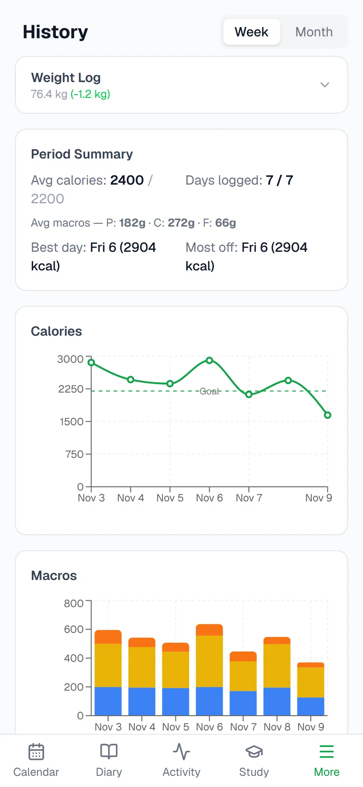

CalTracker
Most calorie trackers only count calories. CalTracker answers a broader question, did I have a good day, and removes the friction that makes people stop logging.
Each day is a ring of five segments: nutrition, cardio, strength, steps and study. Fill all five and the ring turns gold.
The demo opens a private copy of the app with a fictitious week already filled in. Add dinner and watch the nutrition segment fill. It is deleted after 24 hours.
Try the live demo ↗What it does
Barcode instead of typing
Scan a product with the phone camera or search Open Food Facts. Results are cached, so repeat scans work offline, and editing a serving recalculates every macro.
Apple Health instead of forms
An iOS Shortcut sends steps, energy and workouts to a protected endpoint. The importer reads localized numbers, is idempotent and removes workouts recorded twice by the gym app and the watch.
A sentence instead of a screen
"CalTracker, I swam 40 minutes" becomes an entry through fixed rules in English, Spanish and Catalan, with no AI model and no running cost.
Scores you can re-run
A day's score is a pure function of its inputs, computed on request. Change a threshold and the whole history is re-scored.




All screens use fictitious demo data.
Talk to it through Claude
A remote MCP server with its own OAuth 2.1 authorization server lets Claude read and write the same data the app uses: 36 tools and 3 prompts.
log_study_session → Logged Physics, 40 min. Study segment: done.get_day → 2 of 5 segments done: Steps, Study.- Nutrition: about 340 more kcal, dinner will do it.
- Cardio: 20 minutes.
- Strength: one session of at least 15 minutes.
search_foods, then log_food → 250 g, 413 kcal. Nutrition segment: done.Real tool names and result lines; the conversation is illustrative and uses the demo persona's numbers.
Engineering
One brain, four doors
The web app, the Health import, the voice endpoint and every MCP tool call the same service layer, so behaviour never drifts apart.
Security by construction
OAuth 2.1 with PKCE and rotating refresh tokens, passkeys, and a test that fails the build if any route is left without an auth guard.
A demo with real isolation
A separate deployment and database, one Postgres schema per visitor, rate limits and row caps enforced by database triggers.
Time is hard
"Today" is computed in the owner's time zone, and the reminder planner is tested across the March and October clock changes.